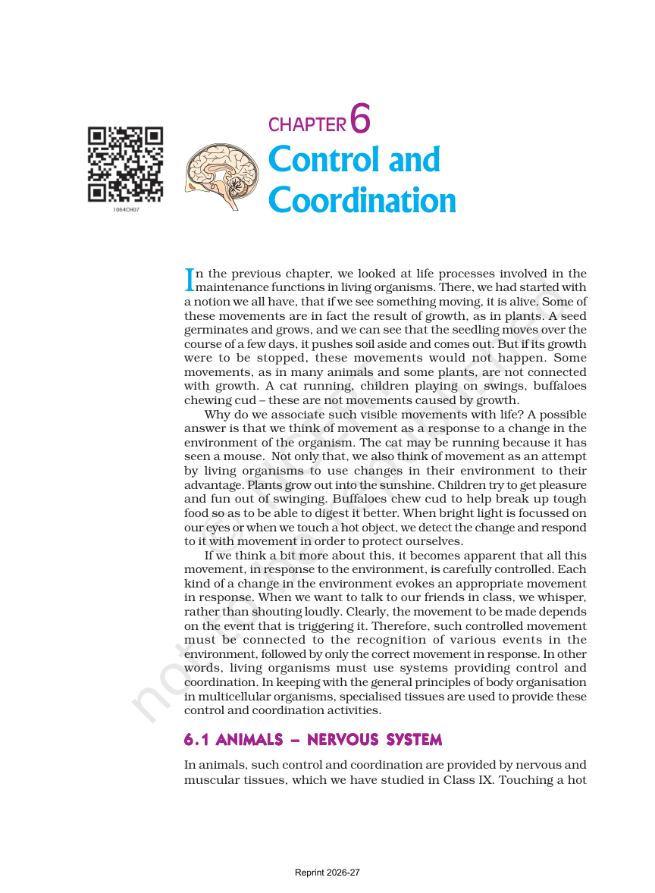

Life Responds to Change
Living things do not just move for no reason. They notice what is happening and then react.
The chapter starts with familiar examples like a cat chasing a mouse, a child pulling away from heat, and a plant turning toward sunlight.
- Movement can be a response to the environment.
- The response is controlled, not random.
- Different situations need different actions.
Big idea: control and coordination help an organism choose the right response at the right time.
